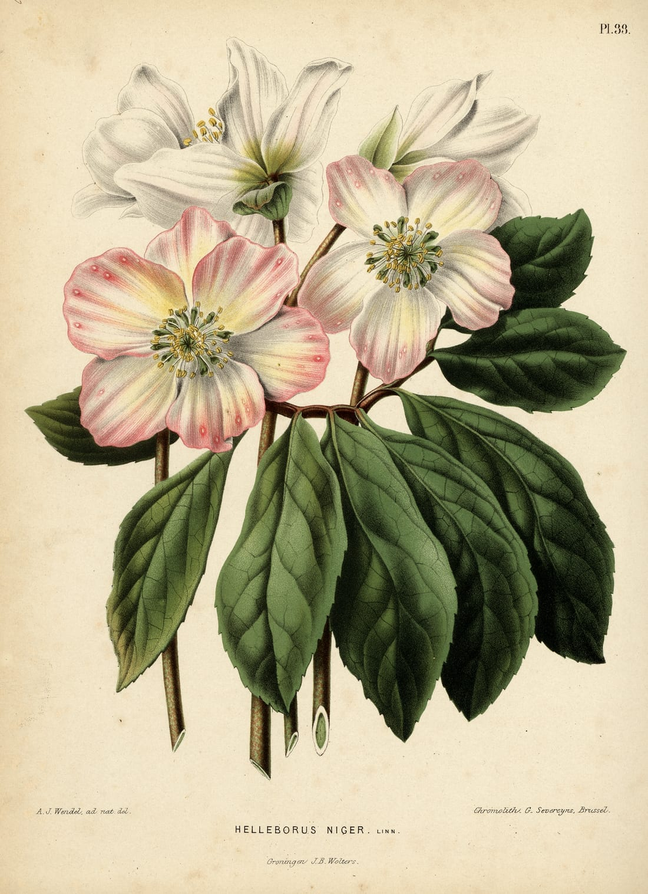
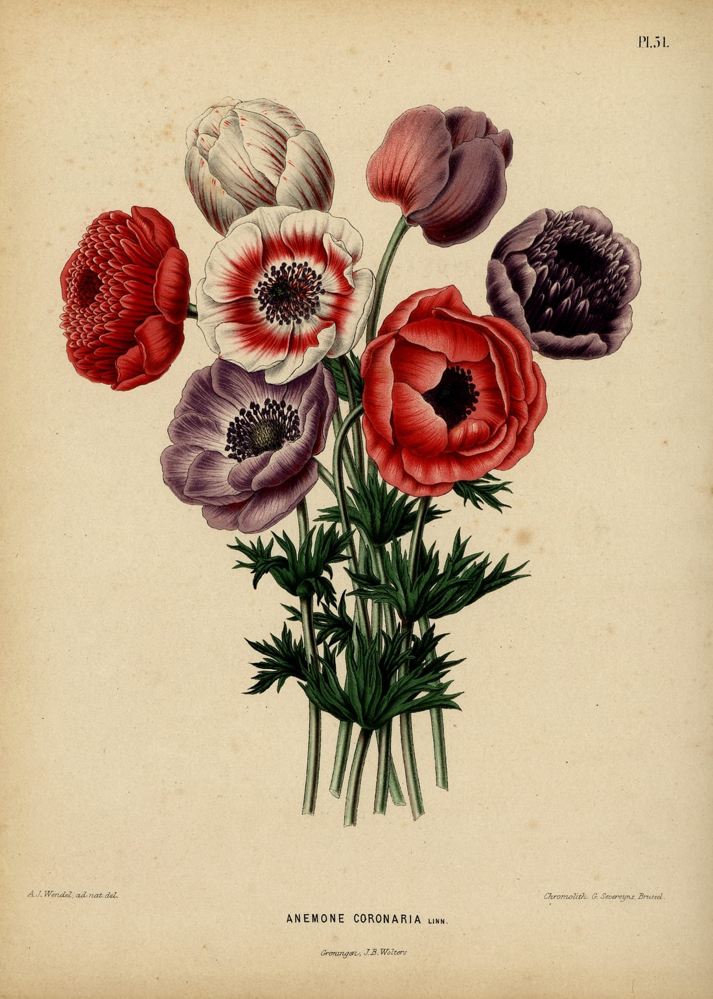

The turn꽃 이름부터 찾게 하지 않습니다
관계와 마음을 말하면,
DearBloom이 꽃과 이유를 함께 고릅니다
01 · 02 Input
관계
연인
마음
먼저 손 내밀고 싶은 날
취향 · 추억 · 안전 조건
고양이와 살아요
03 · 04 Read & verify
AI 해석
AI가 자유로운 문장을 추천 단서로 해석
검증 데이터
검증된 꽃말·이야기·안전 데이터가 후보 판단
크게 위험한 꽃은 추천 전 제외05 Result — 꽃 3안 + 이유 + 이야기 + 메시지 + 구매처


도판 — dearbloom 도감에 쓰는 퍼블릭 도메인 세밀화
선택 이유가 있는 추천
꽃 이름만 보여주지 않고 어떤 입력과 이야기 때문에 골랐는지 설명한다.
여러 갈래의 꽃말
색상·문화권·시대에 따라 달라지는 의미를 출처와 함께 보여준다.
안전을 먼저 보는 추천
고양이·강아지에게 크게 위험한 꽃은 점수를 낮추는 것이 아니라 추천 전에 제외하고, 가벼운 주의가 필요한 꽃은 그 사실을 함께 보여준다.
전달과 구매까지 연결
카드 문구, 비밀 편지, 꽃 조합, 판매처·가까운 꽃집 탐색으로 이어진다.
카드 문구비밀 편지구매처